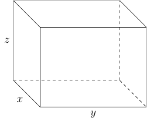

Section 5.5
In this section we will look at solving nonlinear system of equations.
Example 109
Solve the system
Solution:
Notice this is not a system of linear equations. However, we can simply rewrite the system as follows
and notice that
Solving
we have \(x=-2\) and \(x=1\).
When \(x=-2\) we have
When \(x=1\) we have
Therefore, the solution set for the system is \(\{(-2,0),(1,-3)\}\).
Example 110
Solve the system
Solution:
Here we will use the elimination method to solve for \(y\)
When \(y=3\) we have
When \(y=-3\) we have
Therefore, the solution set for the system is \(\{(0,3),(0,-3)\}\).
Example 111
Solve the system
Solution:
If use the elimination method we have
When \(y^2=15-x^{2}\) and \(y=\sqrt{15-x^{2}}\)
When we go back to
We see that \(x\ne-\sqrt{3}\) and \(x\ne-2\sqrt{3}\) (check on your own). Therefore, \(x=\sqrt{3}\) or \(x=2\sqrt{3}\).
When \(x=\sqrt{3}\) we have \(y=\sqrt{15-(\sqrt{3})^{2}}=2\sqrt{3}\).
When \(x=2\sqrt{3}\) we have \(y=\sqrt{15-(2\sqrt{3})^{2}}=\sqrt{3}\). Therefore, two elements in the solution set is \(\{(\sqrt{3},2\sqrt{3}),(2\sqrt{3},\sqrt{3})\}\).
When \(y^{2}=15-x^{2}\) and \(y=-\sqrt{15-x^{2}}\) we have
which we already know the solution to, \(\{\pm\sqrt{3},\pm2\sqrt{3}\}\).
However, when we look at
we see that \(x\ne\sqrt{3}\) and \(x\ne2\sqrt{3}\) (check on your own). Therefore, \(x=-\sqrt{3}\) and \(x=-2\sqrt{3}\).
When \(x=-\sqrt{3}\) we have \(y=-\sqrt{15-(-\sqrt{3})^{2}}=-2\sqrt{3}\).
When \(x=-2\sqrt{3}\) we have \(y=-\sqrt{15-(-2\sqrt{3})^{2}}=-\sqrt{3}\).
This then added \((-\sqrt{3},-2\sqrt{3})\) and \((-2\sqrt{3},-\sqrt{3})\) to the solution set.
Therefore, the solution set is
Example 112
Solve the system
Solution:
First, we will solve for \(|x|\) in the second equation:
Since \(x^{2}=\left(|x|\right)^{2}\) we can say \(y^{2}=\left(|x|\right)^{2}=x^{2}\).
Looking at the first equation we have
When \(x=\sqrt{2}\) we have
However, \(|x|=y\) and \(|\sqrt{2}|\ne-\sqrt{2}\). Which means \((\sqrt{2},\sqrt{2})\) is apart of the solution set and \((\sqrt{2},-\sqrt{2})\) is not apart of the solution set.
When \(x=-\sqrt{2}\) we have
However, \(|x|=y\) and \(|-\sqrt{2}|\ne-\sqrt{2}\). Which means \((-\sqrt{2},\sqrt{2})\) is apart of the solution set and \((-\sqrt{2},-\sqrt{2})\) is not part of the solution set.
Therefore, the solution set is \(\{(\sqrt{2},\sqrt{2}),(-\sqrt{2},\sqrt{2})\}\).
Example 113
A box with an open top has a square bases and four sides of equal height. The volume is 384 cubic meters, and the surface area is 256 square meters. Find the dimensions of the box. Round to the nearest thousandths as necessary.
Solution:
First, we can draw the box. Remember it has an open top.

Second we can consider the two equations involved
which yields a system of two equations and three variables. However, since the box has a square base we can add another equation to get
then we can have
The possible solutions are
However, we are limited by what \(x\) can possibly be. For example \(x\) can not be negative:
Let \(f(x)=x^3-256x+1536\). Then evaluate \(f\) at each of those \(x\) values using the Remainder Theorem. Eventually, you will find that \(f(8)=0\). After doing polynomial long division you will get
Since \(x\) must be positive we have two possible dimensions for \(x\). That is, \(x=8\) or \(x=-4+4\sqrt{13}\).
When \(x=8\) we have
which means that \(x=8\), \(y=8\), and \(z=6\).
When \(x=-4+4\sqrt{13}\approx10.42220510185596\) we have
which means \(x=-4+4\sqrt{13}\), \(y=-4+4\sqrt{13}\), and \(z=\frac{12}{7-\sqrt{13}}\).
Therefore, the possible dimensions we have
and